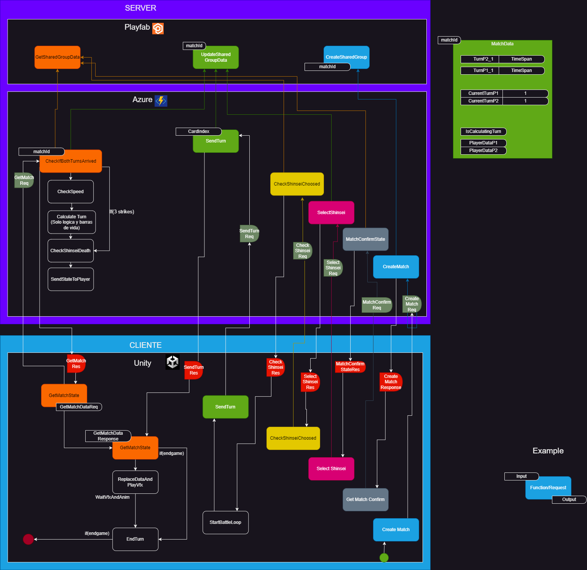

🌐Server🌐
Sacred Tails uses Microsoft Azure and PlayFab systems to function, PlayFab to save account data, battle data, and even manage the game lobby data, and Azure to allow players to make the connection of this data with the client and garantee a safe enviroment for it.

⚔️Battle Server⚔️
The battle server part of azure will handle all the battle logic that will be needed to execute a correct match between two players. Lets see how the flows of a match is developed in the server.
Init Match Flow
🆕Create Match and Delete Match 🗑️
These functions create what is known as Share Group in Azure, the fights in sacred tails are Sharegroups where the two contenders are added. It has a matchId that identifies it and saves the playerData, the turns and the results of the match.
🆕Create Match creates a new match from scratch and the 🗑️Delete match function deletes that match, but the deletes only happens by a manual request from the admin. The matches doesn't self-delete themself .
The create match 📨payload look something like this:
{
"CustomTags": null,
"Entity": null,
"FunctionName": "BattleServer_CreateMatch",
"FunctionParameter": {
"Keys": {
"MatchId": "2C332300EEA8B647_B2DF0D8F88E6053E_3655"
}
},
"GeneratePlayStreamEvent": null,
"AuthenticationContext": null
}
And its 📩response something like this:
{
"Error": null,
"ExecutionTimeMilliseconds": 1022,
"FunctionName": "BattleServer_CreateMatch",
"FunctionResult": {
"success": true,
"code": 19,
"message": "Match created successfully",
"data": null
},
"FunctionResultTooLarge": null,
"Request": {
"CustomTags": null,
"Entity": null,
"FunctionName": "BattleServer_CreateMatch",
"FunctionParameter": {
"Keys": {
"MatchId": "2C332300EEA8B647_B2DF0D8F88E6053E_3655"
}
},
"GeneratePlayStreamEvent": null,
"AuthenticationContext": null
},
"CustomData": null
}
This is an example of a Share Group of a fight in Playfab.

❔Match Confirm State❔
This function is responsible for verifying if both users already confirm the combat.
First, it verifies if the match already has a combat zone base on the position of users if not, use the nearest combat position then return it. Then, it checks if both players call this function and if it is true tell both players to start selecting the match.
This is an example of petition 📨payload to the server:
{
"CallerEntityProfile": {
"Lineage": {
"MasterPlayerAccountId": "This will be filled by unity"
}
},
"FunctionArgument": {
"Keys": {
"MatchId": "Match ID",
"SpawnPoint": "xyz"
}
}
}
This is an example of the responses of the server:
✅📩Positive Response
{
success: true,
code: 25,
message: "Match confirmed by both players",
data: { matchSpawnPoint: matchSpawnPoint }
}
❌📩Negative Response
{
success: false,
code: 23,
message: "Match hasn't been confirmed",
data: null
}
>
🫵🏻Select Shinsei🫵🏻
Once the match is confirmed, the player is asked to select his shinseis. The three shinseis are selected and then the client sent the petition to the server.
Here its an example of that petition 📨payload:
{
"CustomTags": null,
"Entity": null,
"FunctionName": "BattleServer_SelectShinseis",
"FunctionParameter": {
"Keys": {
"MatchId": "2C332300EEA8B647_B2DF0D8F88E6053E_7396",
"ShinseiIdList": [
0,
1,
2
],
"PlayerMatchData":"{\r\n \"DisplayName\": \"jiufen312\",\r\n \"shinseisSelected\": true,\r\n \"hasSurrender\": false,\r\n \"confirmState\": true,\r\n \"strikes\": 0,\r\n \"forbidenActions\": {},\r\n \"playFabId\": \"54BB079356042E83\",\r\n \"currentShinsei\": 0\r\n}"
}
},
"GeneratePlayStreamEvent": null,
"AuthenticationContext": null
}
The server recieves this information and continues to process it.
If the player disconnects by his own decision then he sends a final payload with all the shinseis indices in -1.If that is the case we update the data of the disconnected player and then end the match, here is an example of the pseudocode:
if (shinseisId.includes(-1)) {
//Get members of the match
let getMembersRequest = { SharedGroupId: matchId, GetMembers: true }
PlayFabServer.GetSharedGroupData(getMembersRequest, (error, resultMembers) => {
if (error !== null)
// Return error to client...
else {
// Set player data to disconnect keyword
// When the other player ask for the data, he sees this word and end the game in his client
newTurnData["PlayerMatchData_" + playFabId] = "Disconnect";
let updateRequest = { SharedGroupId: matchId, data: newTurnData }
PlayFabServer.UpdateSharedGroupData( updateRequest, (error, result) => {
if (error !== null)
// Return error to client...
else
// Endgame and return data to client
});
}
});
}
Otherwise, we get the selected indexes of the shinseis for the player, get the shinseis data from the userData in playfab and write them, among the data sent by the client, in the respective player data field of the match sharedGroup.
let getShinseiKeys = [];
shinseisId.forEach( shinseiId => {
// We modify the name in order to match the name in the player title data.
// I.E: if (shinsei index == 1) return "ShinseiSlot1"
getShinseiKeys = // List of modified names
});
let getShinseiData = { PlayFabId: playFabId, Keys: getShinseiKeys };
PlayFabServer.GetUserData( getShinseiData, (error, result) => {
if (error !== null) {
// Return error to client...
}
else {
// With the data of the shinseis build the player data that is
// Going to exist in the shared group.
let updateRequest = { SharedGroupId: matchId, data: newTurnData }
PlayFabServer.UpdateSharedGroupData( updateRequest, (error, result) => {
if (error !== null)
// Return error to client...
else
// Return succes to the client, with the player's data
}
);
}
});
Finally here is an example of the server 📩response:
{
"Error": null,
"ExecutionTimeMilliseconds": 471,
"FunctionName": "BattleServer_SelectShinseis",
"FunctionResult": {
"success": true,
"code": 26,
"message": "Shinsei Selection success",
"data": null
},
"FunctionResultTooLarge": null,
"Request": {
"CustomTags": null,
"Entity": null,
"FunctionName": "BattleServer_SelectShinseis",
"FunctionParameter": {
"Keys": {
"MatchId": "2C332300EEA8B647_B2DF0D8F88E6053E_7396",
"ShinseiIdList": [
0,
1,
2
],
"PlayerMatchData": "{\r\n \"DisplayName\": \"jiufen\",\r\n \"shinseisSelected\": true,\r\n \"hasSurrender\": false,\r\n \"confirmState\": false,\r\n \"strikes\": 0,\r\n \"forbidenActions\": {},\r\n \"ShinseiParty\": [\r\n {\r\n \"shinseiName\": \"\",\r\n \"ShinseiDna\": \"10090030011012007000101000000210020000031010003004010\",\r\n \"generation\": \"\",\r\n \"ShinseiActionsIndex\": [\r\n 46,\r\n 15,\r\n 8,\r\n 32\r\n ],\r\n \"shinseiType\": 10,\r\n \"alteredStates\": {},\r\n \"reflectDamage\": 0,\r\n \"shinseiRarity\": 2,\r\n \"ShinseiOriginalStats\": {\r\n \"Attack\": 38.0,\r\n \"Defence\": 143.0,\r\n \"Speed\": 38.0,\r\n \"Stamina\": 91.0,\r\n \"Vigor\": 83.0,\r\n \"Health\": 560,\r\n \"Energy\": 157\r\n },\r\n \"shinseiHealth\": 0,\r\n \"shinseiEnergy\": 0,\r\n \"evadeChance\": 0\r\n },\r\n {\r\n \"shinseiName\": \"\",\r\n \"ShinseiDna\": \"10120080011011002000100700200210090000031007003004007\",\r\n \"generation\": \"\",\r\n \"ShinseiActionsIndex\": [\r\n 11,\r\n 4,\r\n 36,\r\n 33\r\n ],\r\n \"shinseiType\": 7,\r\n \"alteredStates\": {},\r\n \"reflectDamage\": 0,\r\n \"shinseiRarity\": 2,\r\n \"ShinseiOriginalStats\": {\r\n \"Attack\": 72.0,\r\n \"Defence\": 143.0,\r\n \"Speed\": 48.0,\r\n \"Stamina\": 60.0,\r\n \"Vigor\": 84.0,\r\n \"Health\": 564,\r\n \"Energy\": 110\r\n },\r\n \"shinseiHealth\": 0,\r\n \"shinseiEnergy\": 0,\r\n \"evadeChance\": 0\r\n },\r\n {\r\n \"shinseiName\": \"\",\r\n \"ShinseiDna\": \"10040010011001004000100500300210070030031009002004001\",\r\n \"generation\": \"\",\r\n \"ShinseiActionsIndex\": [\r\n 49,\r\n 22,\r\n 43,\r\n 11\r\n ],\r\n \"shinseiType\": 1,\r\n \"alteredStates\": {},\r\n \"reflectDamage\": 0,\r\n \"shinseiRarity\": 3,\r\n \"ShinseiOriginalStats\": {\r\n \"Attack\": 117.0,\r\n \"Defence\": 54.0,\r\n \"Speed\": 88.0,\r\n \"Stamina\": 100.0,\r\n \"Vigor\": 76.0,\r\n \"Health\": 532,\r\n \"Energy\": 170\r\n },\r\n \"shinseiHealth\": 0,\r\n \"shinseiEnergy\": 0,\r\n \"evadeChance\": 0\r\n }\r\n ]\r\n}"
}
},
"GeneratePlayStreamEvent": null,
"AuthenticationContext": null
},
"CustomData": null
}
🫵🏻✅Confirm Shinsei selection🫵🏻✅
The client, after selecting it's shisneis, continues by asking each X seconds if the other player already selected/disconnected. This petition is made by the CheckShinseisChoosed petiton and its 📨payload is a basic one that takes only the matchId, it looks something like this:
{
"CallerEntityProfile": {
"Lineage": {
"MasterPlayerAccountId": "2C332300EEA8B647"
}
},
"FunctionArgument": {
"Keys": {
"MatchId": "MatchId"
}
}
}
On the server, we process the data we have in the sharedgroup to verify if both players has already choosed or disconnected. If someone disconnected we return to the players the respective code for them to process it, otherwise if both players choosed.
await PlayfabHelpers.GetMatchMembers(matchId).then(async (membersData) => {
// Get Data of players in the shared group.
PlayFabServer.GetSharedGroupData( getPlayerDataRequest, (error, result) => {
if (error !== null)
// Return error to client...
else {
let playersData = []
// Parse the data of the players in the sharedgroup and set them in the variable playersdata ...
let ifBothPlayersConfirmed = playersData.length == 2;
if (ifBothPlayersConfirmed) {
if (playersData.includes("Disconnect")) {
// Return to client match ended by disconnection
else
// Return to client send match started
}
else
// Return to client that the other player hasn't selected yet
}
});
});
Then we return the data of both players, in order for the clients to fill their data. The data looks like this:
{
"success": true,
"code": 31,
"message": "Shinseis sucessfully selected by both players",
"data": [
{
"DisplayName": "",
"shinseisSelected": true,
"hasSurrender": false,
"confirmState": false,
"strikes": 0,
"forbidenActions": {},
"ShinseiParty": [
{
"shinseiName": "",
"ShinseiDna": "10080040011003001000100700000210010000031005002004003",
"generation": "",
"ShinseiActionsIndex": [
61,
56,
39,
45
],
"shinseiType": 3,
"reflectDamage": 0,
"shinseiRarity": 1,
"ShinseiOriginalStats": {
"Attack": 24,
"Defence": 75,
"Speed": 24,
"Stamina": 227.85,
"Vigor": 50,
"Health": 428,
"Energy": 241
},
"shinseiIcon": {
"instanceID": -295248
},
"shinseiHealth": 428,
"shinseiEnergy": 19,
"evadeChance": 0,
"ShinseiNormalizedStats": {
"Attack": 24,
"Defence": 75,
"Speed": 24,
"Stamina": 227.85,
"Vigor": 50,
"Health": 428,
"Energy": 241
}
},
{
"shinseiName": "",
"ShinseiDna": "10070030011001000000101200900210100000031009002004001",
"generation": "",
"ShinseiActionsIndex": [
12,
19,
20,
8
],
"shinseiType": 1,
"reflectDamage": 0,
"shinseiRarity": 2,
"ShinseiOriginalStats": {
"Attack": 155,
"Defence": 99,
"Speed": 30,
"Stamina": 39,
"Vigor": 63,
"Health": 480,
"Energy": 79
},
"shinseiIcon": {
"instanceID": -295194
},
"shinseiHealth": 480,
"shinseiEnergy": 79,
"evadeChance": 0,
"ShinseiNormalizedStats": {
"Attack": 155,
"Defence": 99,
"Speed": 30,
"Stamina": 39,
"Vigor": 63,
"Health": 480,
"Energy": 79
}
},
{
"shinseiName": "",
"ShinseiDna": "10090030011005004000101200600210100030031009000004009",
"generation": "",
"ShinseiActionsIndex": [
36,
8,
14,
6
],
"shinseiType": 9,
"reflectDamage": 0,
"shinseiRarity": 3,
"ShinseiOriginalStats": {
"Attack": 62,
"Defence": 87,
"Speed": 116,
"Stamina": 117,
"Vigor": 51,
"Health": 432,
"Energy": 196
},
"shinseiIcon": {
"instanceID": -295208
},
"shinseiHealth": 432,
"shinseiEnergy": 196,
"evadeChance": 0,
"ShinseiNormalizedStats": {
"Attack": 62,
"Defence": 87,
"Speed": 116,
"Stamina": 117,
"Vigor": 51,
"Health": 432,
"Energy": 196
}
}
],
"playFabId": "2C332300EEA8B647",
"currentShinsei": 0,
"tempCalculateShinseiIndex": 0
},
{
"DisplayName": "jiufen",
"shinseisSelected": true,
"hasSurrender": false,
"confirmState": true,
"ShinseiParty": [
{
"shinseiName": "",
"ShinseiDna": "10060030011006003000100200400210100020031000002004006",
"generation": "",
"ShinseiActionsIndex": [
57,
53,
25,
14
],
"shinseiType": 6,
"shinseiRarity": 3,
"ShinseiOriginalStats": {
"Health": 452,
"Attack": 170,
"Deffense": 66,
"Speed": 51,
"Stamina": 110,
"Vigor": 56,
"Energy": 185
},
"shinseiIcon": {
"instanceID": 0
},
"shinseiHealth": null,
"shinseiEnergy": 0,
"evadeChance": 0,
"ShinseiNormalizedStats": {
"Health": 452,
"Attack": 170,
"Deffense": 66,
"Speed": 51,
"Stamina": 110,
"Vigor": 56,
"Energy": 185
}
},
{
"shinseiName": "",
"ShinseiDna": "10010000011003003000100900400210070030031004002004003",
"generation": "",
"ShinseiActionsIndex": [
13,
4,
9,
46
],
"shinseiType": 3,
"shinseiRarity": 2,
"ShinseiOriginalStats": {
"Health": 408,
"Attack": 69,
"Deffense": 24,
"Speed": 57,
"Stamina": 177,
"Vigor": 45,
"Energy": 286
},
"shinseiIcon": {
"instanceID": 0
},
"shinseiHealth": 408,
"shinseiEnergy": 286,
"evadeChance": 0,
"ShinseiNormalizedStats": {
"Health": 408,
"Attack": 69,
"Deffense": 24,
"Speed": 57,
"Stamina": 177,
"Vigor": 45,
"Energy": 286
}
},
{
"shinseiName": "",
"ShinseiDna": "10050000011012006000100000000210080010031001000004012",
"generation": "",
"ShinseiActionsIndex": [
47,
16,
28,
31
],
"shinseiType": 12,
"shinseiRarity": 1,
"ShinseiOriginalStats": {
"Health": 488,
"Attack": 105,
"Deffense": 105,
"Speed": 68,
"Stamina": 93,
"Vigor": 65,
"Energy": 160
},
"shinseiIcon": {
"instanceID": 0
},
"shinseiHealth": 488,
"shinseiEnergy": 160,
"evadeChance": 0,
"ShinseiNormalizedStats": {
"Health": 488,
"Attack": 105,
"Deffense": 105,
"Speed": 68,
"Stamina": 93,
"Vigor": 65,
"Energy": 160
}
}
],
"playFabId": "5352E306ACAB3F9B",
"currentShinsei": 0,
}
]
}
Once this is done, the match starts.
⚔️♾️Combat Flow️♾️⚔️
Once both players selected their shinseis, the combat starts. The main loop of the combat begins which consists of each player sending their turn, using SendTurn. Then the client starts asking the server if the other player already sent its turn and it calculates all the logic on the server, and when the answer arrive to the client, he shows all the vfx and animation and then the loop cycles again until and end condition happens. Lets see all of these parts in more detail:
Send Turn
The client sent either the index of the card in the database or an special action. The current special actions are the following ones:
- Index 0 corresponds to skip turn
- Index 2 to surrender.
- Index 1004,1005,1006 are a change of shinsei 1,2,3 respectively.
This is an example of a petition 📨payload:
{
"CustomTags": null,
"Entity": null,
"FunctionName": "BattleServer_SendTurn",
"FunctionParameter": {
"Keys": {
"MatchId": "2C332300EEA8B647_B2DF0D8F88E6053E_7396",
"indexCard": 2,
"clientShinsei": 1
}
},
"GeneratePlayStreamEvent": null,
"AuthenticationContext": null
}
When this petiton arrives to the server, it makes necessary checks for the combat such as checking if there is already a winner of a match or if the other player is writing their turn at that moment to avoid writing at the same time (Shared group have problems with writing data at the same time).
But after the main checks are passed, it checks if is an special card or if the index that the player sent actually exist in the client shinsei available cards. Lets see the pseudocode of that:
if (!isSpecialCard) {
sendTurnHelper.AnalyzeSpecialIndexAndSendTurnDev(...);
return
}
await PlayfabHelpers.GetPlayerMatchData(matchId, playFabId).then(async (playerData) => {
if (!playerHasCardInItsShinseiData) {
// Return error, not valid card index to client...
return;
}
//Get the card data from the index
turnToSend = { ...cardDatabase[indexOfcard] };
// If is a random card index, like empower. Select a random card from database.
turnToSend.BattleActions.forEach(card => {
if (card.actionType == randomType) {
// Select random card
// ...
// Set previous index in a variable for later use
turnToSend.isComingFromCopyIndex = previousIndex;
}
});
// Write turn on playfab and return client success response
sendTurnHelper.SendTurnWithCard(...);
});
And this is an example of the server 📩response:
{
"Error": null,
"ExecutionTimeMilliseconds": 739,
"FunctionName": "BattleServer_SendTurn",
"FunctionResult": {
"success": true,
"code": 35,
"message": "Send turn correct",
"data": {
"cardType": 10,
"isComingFromCopyIndex": -1,
"PpCost": 120,
"name": "BlackRay",
"hideFlags": 0,
"BattleActions": [
{
"actionType": 2,
"turnsDuration": 1,
"amount": 344,
"isSelfInflicted": false,
"cardSkipTurn": true,
"bonusPercent": 24,
"statBonusDamage": 2,
"applyEachTurn": false,
"isPercertange": true,
"numberOfTimesBuffApplied": 0,
"changeMinAndMaxStats": false,
"stat1": 0,
"stat2": 0,
"activateAlteredState": false,
"alteredStateToActivate": 0,
"criticsPercentChange": 0,
"actionElementType": 10,
"criticsRoll": "0.67",
"evadeRoll": "0.04",
"turnsPassed": 0,
"evadedTurns": 0
}
],
"timeStamp": "2023-01-23T21:52:14.802Z",
"indexCard": 8
}
},
"FunctionResultTooLarge": null,
"Request": {
"CustomTags": null,
"Entity": null,
"FunctionName": "BattleServer_SendTurn",
"FunctionParameter": {
"Keys": {
"MatchId": "2C332300EEA8B647_B2DF0D8F88E6053E_7396",
"indexCard": 2
}
},
"GeneratePlayStreamEvent": null,
"AuthenticationContext": null
},
"CustomData": null
}
When the players have already sent their corresponding turns, they begin asking the server to check if the other has already sent their data and the server was able to process the turn, this is done in the Azure Function GetMatchState.
GetMatchState.js And CalculateTurn.js
This is an example of a petition 📨payload the server recieves when the client checks every X seconds the state of the server in order to proccess the turns once they had been sended:
{
"CallerEntityProfile": {
"Lineage": {
"MasterPlayerAccountId": "54BB079356042E83"
}
},
"FunctionArgument": {
"Keys": {
"MatchId": "ExampleMatchId"
}
}
}
Get match state is responsible for checking if the data from both players is already uploaded and, in case it is, it calculates them using Calculate Turn class.
Calculate turn is the heart of the combat, it is responsible for applying all the modifications to the data to then save them in PlayFab. It first verifies that only one of the two players is manipulating the data, then it verifies which of the two Shinsei that are currently in combat has more speed to apply their actions first.
Having decided the order of execution of actions, it verifies a special case that is CopyCat, an attack that allows you to use the same attack as the opponent, then it checks if either of them decided to surrender, and finally, it verifies if the time limit for the combat has not been exceeded. If it passes all these filters, the turn is processed using the ExecuteTurn function.
In execute turn, first, the altered states are calculated. These can be Burned, Rooted, Bleeding or Reflecting and their effects are applied. Finally, the effects of the card chosen by the player are applied and the energy of the Shinsei is regenerated at the end of the process. If it turns out that a Shinsei died in the process, it is changed to the next one, or simply if there are no more available, the end of the game will be proccessed. Like it follows this pseudocode:
function ExecuteTurn(...) {
if (/* It has a terrain alteration */)
terrainController.ExecuteTerrain(...);
let previousPlayerShinsei = ...;
let previousOtherShinsei = ...;
CalculateAlteredStates(playerThatCalledTheFunction,...);
gameEnded = CalculateUserTurn(playerThatCalledTheFunction,...)
if (gameEnded) return;
if (/* If player attack didn't kill otherPlayer shinshei */) {
CalculateAlteredStates(otherPlayer,...);
gameEnded = CalculateUserTurn(otherPlayer,...)
if (gameEnded) return;
}
RegenerateEnergy(playerThatCalledFunction);
RegenerateEnergy(otherPlayer);
}
And at the end the 📩response looks something like this:
{
"success": true,
"code": 40,
"message": "Turn correctly proccessed, check data.",
"data": {
"playersTurn": [
{
"cardType": 0,
"isComingFromCopyIndex": -1,
"PpCost": 0,
"name": "SkipTurn",
"hideFlags": 0,
"BattleActions": [
{
"actionType": 6,
"turnsDuration": 1,
"isSelfInflicted": true,
"cardSkipTurn": false,
"bonusPercent": 0,
"applyEachTurn": false,
"isPercertange": true,
"numberOfTimesBuffApplied": 0,
"changeMinAndMaxStats": false,
"stat1": 0,
"stat2": 0,
"activateAlteredState": false,
"alteredStateToActivate": 0,
"criticsPercentChange": 0,
"actionElementType": 0,
"criticsRoll": "0.12",
"evadeRoll": "0.04",
"turnsPassed": 0,
"evadedTurns": 0
}
],
"timeStamp": "2023-03-02T20:12:47.742Z",
"indexCard": 0
},
{
"cardType": 0,
"isComingFromCopyIndex": -1,
"PpCost": 0,
"name": "SkipTurn",
"hideFlags": 0,
"BattleActions": [
{
"actionType": 6,
"turnsDuration": 1,
"isSelfInflicted": true,
"cardSkipTurn": false,
"bonusPercent": 0,
"applyEachTurn": false,
"isPercertange": true,
"numberOfTimesBuffApplied": 0,
"changeMinAndMaxStats": false,
"stat1": 0,
"stat2": 0,
"activateAlteredState": false,
"alteredStateToActivate": 0,
"criticsPercentChange": 0,
"actionElementType": 0,
"criticsRoll": "0.17",
"evadeRoll": "0.94",
"turnsPassed": 0,
"evadedTurns": 0
}
],
"timeStamp": "2023-03-02T20:12:48.556Z",
"indexCard": 0
}
],
"isOwnerLocal": false,
"turnTimes": {
"lastUpdatedTurn1": "2023-03-06T15:26:36.635Z",
"lastUpdatedTurn2": "2023-03-06T15:26:36.623Z",
"startMatchTime": "1678116385000"
},
"lastUpdated": "2023-03-06T15:26:36.596Z",
"currentTerrain": null,
"currentTurn": "2",
"playersServerData": {
"PlayerMatchData_B2DF0D8F88E6053E": "{\"DisplayName\":\"\",\"shinseisSelected\":true,\"hasSurrender\":false,\"confirmState\":false,\"strikes\":0,\"forbidenActions\":{},\"ShinseiParty\":[{\"shinseiName\":\"\",\"ShinseiDna\":\"10090020011004003000100400000210030000031006003004004\",\"generation\":\"\",\"ShinseiActionsIndex\":[36,19,49,32],\"shinseiType\":4,\"reflectDamage\":0,\"shinseiRarity\":2,\"ShinseiOriginalStats\":{\"Attack\":34,\"Defence\":97,\"Speed\":49,\"Stamina\":94,\"Vigor\":94,\"Health\":604,\"Energy\":161},\"shinseiIcon\":{\"instanceID\":-644706},\"shinseiHealth\":604,\"shinseiEnergy\":15,\"evadeChance\":0,\"didAlteredStateKillShinsei\":false,\"ShinseiNormalizedStats\":{\"Attack\":34,\"Defence\":97,\"Speed\":49,\"Stamina\":94,\"Vigor\":94,\"Health\":604,\"Energy\":161},\"healthAfterAlteredState\":604},{\"shinseiName\":\"\",\"ShinseiDna\":\"10030020011005002000100600100210100000031004003004005\",\"generation\":\"\",\"ShinseiActionsIndex\":[53,57,45,41],\"shinseiType\":5,\"reflectDamage\":0,\"shinseiRarity\":2,\"ShinseiOriginalStats\":{\"Attack\":94,\"Defence\":109,\"Speed\":35,\"Stamina\":114,\"Vigor\":80,\"Health\":548,\"Energy\":191},\"shinseiIcon\":{\"instanceID\":-644722},\"shinseiHealth\":548,\"shinseiEnergy\":191,\"evadeChance\":0,\"didAlteredStateKillShinsei\":false,\"ShinseiNormalizedStats\":{\"Attack\":94,\"Defence\":109,\"Speed\":35,\"Stamina\":114,\"Vigor\":80,\"Health\":548,\"Energy\":191}},{\"shinseiName\":\"\",\"ShinseiDna\":\"10120070011010001000101100000210060010031000003004010\",\"generation\":\"\",\"ShinseiActionsIndex\":[32,37,12,44],\"shinseiType\":10,\"reflectDamage\":0,\"shinseiRarity\":2,\"ShinseiOriginalStats\":{\"Attack\":46,\"Defence\":154,\"Speed\":56,\"Stamina\":53,\"Vigor\":86,\"Health\":572,\"Energy\":100},\"shinseiIcon\":{\"instanceID\":-644736},\"shinseiHealth\":572,\"shinseiEnergy\":100,\"evadeChance\":0,\"didAlteredStateKillShinsei\":false,\"ShinseiNormalizedStats\":{\"Attack\":46,\"Defence\":154,\"Speed\":56,\"Stamina\":53,\"Vigor\":86,\"Health\":572,\"Energy\":100}}],\"playFabId\":\"B2DF0D8F88E6053E\",\"currentShinsei\":0,\"tempCalculateShinseiIndex\":0,\"KONODIODA\":20269,\"strikeTimer\":\"Min:0Sec:20\"}",
"PlayerMatchData_5352E306ACAB3F9B": "{\"DisplayName\":\"jiufen\",\"shinseisSelected\":true,\"hasSurrender\":false,\"confirmState\":true,\"ShinseiParty\":[{\"shinseiName\":\"\",\"ShinseiDna\":\"10060030011006003000100200400210100020031000002004006\",\"generation\":\"\",\"ShinseiActionsIndex\":[57,53,25,14],\"shinseiType\":6,\"shinseiRarity\":3,\"ShinseiOriginalStats\":{\"Health\":452,\"Attack\":170,\"Defence\":-14,\"Speed\":51,\"Stamina\":110,\"Vigor\":56,\"Energy\":185},\"shinseiIcon\":{\"instanceID\":0},\"shinseiHealth\":300,\"shinseiEnergy\":15,\"evadeChance\":0,\"ShinseiNormalizedStats\":{\"Health\":452,\"Attack\":170,\"Defence\":-14,\"Speed\":51,\"Stamina\":110,\"Vigor\":56,\"Energy\":185},\"didAlteredStateKillShinsei\":false,\"healthAfterAlteredState\":300,\"alteredStates\":{\"3\":{\"amount\":40,\"targetPlayer\":\"5352E306ACAB3F9B\",\"perTurns\":true,\"turnsDuration\":3,\"turnsLeft\":2}}},{\"shinseiName\":\"\",\"ShinseiDna\":\"10010000011003003000100900400210070030031004002004003\",\"generation\":\"\",\"ShinseiActionsIndex\":[13,4,9,46],\"shinseiType\":3,\"shinseiRarity\":2,\"ShinseiOriginalStats\":{\"Health\":408,\"Attack\":69,\"Defence\":24,\"Speed\":57,\"Stamina\":177,\"Vigor\":45,\"Energy\":286},\"shinseiIcon\":{\"instanceID\":0},\"shinseiHealth\":408,\"shinseiEnergy\":286,\"evadeChance\":0,\"ShinseiNormalizedStats\":{\"Health\":408,\"Attack\":69,\"Defence\":24,\"Speed\":57,\"Stamina\":177,\"Vigor\":45,\"Energy\":286}},{\"shinseiName\":\"\",\"ShinseiDna\":\"10050000011012006000100000000210080010031001000004012\",\"generation\":\"\",\"ShinseiActionsIndex\":[47,16,28,31],\"shinseiType\":12,\"shinseiRarity\":1,\"ShinseiOriginalStats\":{\"Health\":488,\"Attack\":105,\"Defence\":105,\"Speed\":68,\"Stamina\":93,\"Vigor\":65,\"Energy\":160},\"shinseiIcon\":{\"instanceID\":0},\"shinseiHealth\":488,\"shinseiEnergy\":160,\"evadeChance\":0,\"ShinseiNormalizedStats\":{\"Health\":488,\"Attack\":105,\"Defence\":105,\"Speed\":68,\"Stamina\":93,\"Vigor\":65,\"Energy\":160}}],\"playFabId\":\"5352E306ACAB3F9B\",\"currentShinsei\":0,\"tempCalculateShinseiIndex\":0,\"KONODIODA\":19455,\"strikeTimer\":\"Min:0Sec:19\"}"
}
}
}
Battle Actions
Each action within the game is represented by a class that is responsible for knowing how to process itself. In the current game, the following actions exist:
- Block
- BuffDebuff
- ChangeShinsei
- CopyCat
- Damage
- Heal
- ReflectDamage
- SkipTurn
- StatSwap
- EndGame
Block
Block allows the Shinsei to evade the damage from the next attack of its opponent. Some cards bring this action as a secondary effect.
function BlockActionType(actionData, userData, otherData) {
//Check who gets the movement block
let targetPlayerData = actionData.isSelfInflicted ? userData : otherData;
if (/* There is not already a block action of this type */) {
//Write the ban movements into the players data
targetPlayerData.forbidenActions[actionData.amount] = actionData.turnsDuration;
}
}
Buff and Debuff
Buffs increase the statistics of a Shinsei, whether its attack, defense, vigor, stamina or damage, debuffs are the opposite by decreasing the stats.
function ExecuteBuffDebuff(buffDebuffData, userData, otherData) {
if (/* The buff is not already applied */) {
let targetPlayerData = buffDebuffData.isSelfInflicted ? userData : otherData;
if (!attackEvaded) {
buffDebuffData.evadedTurns++;
return;
}
// Set buff amount to negative if is a debuff
let buffAmount = amount * (isBuff? 1 : -1);
if (/* If buff is applied by percentage */) {
let percentage = ...;
targetPlayerData.ShinseiParty[targetPlayerData.currentShinsei].ShinseiOriginalStats[stat] = statValue * percentage;
buffDebuffData.numberOfTimesBuffApplied++;
}
else if(/* If buff is applied directly */)
{
//Is within normal values
if (finalAmount < 300 && finalAmount > 0) {
shinseiStats[stat] += amount;
}
}
// There are 2 stats, original and normalized
// Original has the full value I.E: 453
// Normalized is the value from 0-300, I.E: 300
SetNormalizedStats(...);
}
}
Change Shinsei
This defines the action of changing the current Shinsei. Here is the pseudocode:
function ExecuteChangeShinsei(...) {
let targetPlayerData = changeShinseiData.isSelfInflicted ? userData : otherData;
targetPlayerData.currentShinsei = changeShinseiData.amount;
actionsOrdered[targetIndex] = [];
}
Copy Cat
Copy Cat is a special case where the opponent's ability is used.
function ExecuteCopyCat(turnsOrdered, actionsOrdered, userIndex, otherIndex) {
//Write the action from the other player into the battleActions of the target player.
turnsOrdered[userIndex] = { ...turnsOrdered[otherIndex]};
//Preserve the previous index for the client to execute vfx
turnsOrdered[userIndex].isComingFromCopyIndex = previousIndex;
}
Damage
This is the simplest type of action because it only processes the damage with the current Shinsei's stats and applies it.
function ExecuteDamage(damageData, userData, otherData) {
// Select target
let targetPlayerData = damageData.isSelfInflicted ? userData : otherData;
if (/* If target shinsei has a reflect flag */)
// Invert the target
if (/* Should apply critic */)
criticMultiplier = 1.5;
//Attack
if (!attackEvaded) {
let bonusDamage = battleStatisticsCalculator.GetBonusStat(shinseiType, cardType,...);
let rawDamage = battleStatisticsCalculator.GetRawDamage(shinseiAttack,shinseiType, ...);
let finalDamage = battleStatisticsCalculator.GetDamageReceiveByTarget(defence,...);
let finalDamageInt = Math.floor(finalDamage);
//Set damage to shinsei health
targetShinsei.shinseiHealth = finalDamageInt;
}
}
Heal
Heal is the a similar process as damage but increasing the health instead.
function ExecuteHeal(healData, userData, otherData) {
//Select target
let targetPlayerData = healData.isSelfInflicted ? userData : otherData;
let bonusHeal = battleStatisticsCalculator.GetBonusStat(...);
let finalHeal = Math.floor((currentHealth + healData.amount + bonusHeal));
targetShinsei.shinseiHealth = Math.min(maxHealth, finalHeal);
}
Reflect Damage
Reflect Damage is a special status in which the damage that would be received is applied to the opponent.
function ReflectDamage(reflectDamageData, userData, otherData) {
//Select target
let targetPlayerData = reflectDamageData.isSelfInflicted ? userData : otherData;
//Apply target
targetShinsei.reflectDamageLeft += 1;
}
Skip Turn
This function is mainly used in the case of setting a strike because the turn was sent after the allowed time. It's also use for cards like root that makes the oponnent skips a turn. Lets see the pseudocode:
function ExecuteSkip(actionData, playerData, otherData, actionOrdered, turnsData, userIndexes) {
if (!actionData.isSelfInflicted) {
// If is a card someone else set on me, then we proceed set its skipTurnVariable in the shinsei
// to the turns duration of the card.
otherPlayerShinsei.skipTurnsLeft = actionData.turnsDuration;
actionOrdered.push(skipTurnAction);
}
else {
if (minutesFromSendTurnToNow >= 1)
playerData.strikes++;
// If the player has reached 3 strikes already we kill all his shinseis in order to end the match.
if (playerData.strikes >= 3)
playerData.ShinseiParty.forEach(element => element.shinseiHealth = 0);
}
}
StatSwap
Swaps the value of two stats temporarily. This could be done by selecting the 2 stats to change, or by changen the max stat with the min stat. I.E: Exchange the high defence value with the low attack value. Lets look at the pseudocode:
function ExecuteStatSwap(...) {
//Select target
let targetPlayerData = statSwapData.isSelfInflicted ? userData : otherData;
if (/* If there it hasn't been applied yet*/) {
if (attackEvaded) {
statSwapData.evadedTurns++;
return;
}
if (statSwapData.changeMinAndMaxStats) {
// Search the max and min stat
shinseiTarget.ShinseiOriginalStats.forEach(stat => {
if (value > maxValue)
statMax = stat;
else if (value < minValue)
statMin = stat;
});
//Exchange the 2 stats
shinseiTarget.ShinseiOriginalStats[statMax] = minValue;
shinseiTarget.ShinseiOriginalStats[statMin] = maxValue;
//Set the stats on the action data in order to exchange it later
statSwapData.stat1 = statMax;
statSwapData.stat2 = statMin;
}
else {
//Exchange the 2 stats
let value1Temp = shinseiTarget.ShinseiOriginalStats[stat1];
shinseiTarget.ShinseiOriginalStats[stat1] = shinseiTarget.ShinseiOriginalStats[stat2];
shinseiTarget.ShinseiOriginalStats[stat2] = value1Temp;
}
SetNormalizedStats(targetPlayerData);
}
}
EndGameAction
This action is special because it is called when the game has ended on the turn calculation, independent of where in the code is it. It is responsible for granting the virtual currency prizes, updating data in the tournament status and writing in the respective places who was the winner. Note that this only happens on calculation, it doesn't happend if the player it's not the one calculating, later we will see this case.
Before that, it can be of value reuse the turnsData payload, in order to make the paylod not as extensive, so this is the response of a turns data:
TurnsData
"turnsData": [ { "cardType": 0, "isComingFromCopyIndex": -1, "PpCost": 0, "name": "BlackRay", "hideFlags": 0, "BattleActions": [ { "actionType": 2, "turnsDuration": 1, "isSelfInflicted": true, "cardSkipTurn": true, "bonusPercent": 0, "applyEachTurn": false, "isPercertange": true, "numberOfTimesBuffApplied": 0, "changeMinAndMaxStats": false, "stat1": 0, "stat2": 0, "activateAlteredState": false, "alteredStateToActivate": 0, "criticsPercentChange": 0, "actionElementType": 0, "criticsRoll": "0.42", "evadeRoll": "0.69", "turnsPassed": 0, "evadedTurns": 0 } ], "timeStamp": "2023-01-06T13:30:26.836Z", "indexCard": 2 }, { "cardType": 0, "isComingFromCopyIndex": -1, "PpCost": 0, "name": "Eclipse", "hideFlags": 0, "BattleActions": [ { "actionType": 0, "turnsDuration": 1, "isSelfInflicted": true, "cardSkipTurn": true, "bonusPercent": 0, "applyEachTurn": false, "isPercertange": true, "numberOfTimesBuffApplied": 0, "changeMinAndMaxStats": false, "stat1": 0, "stat2": 0, "activateAlteredState": false, "alteredStateToActivate": 0, "criticsPercentChange": 0, "actionElementType": 0, "criticsRoll": "0.10", "evadeRoll": "0.51", "turnsPassed": 0, "evadedTurns": 0 } ], "timeStamp": "2023-01-06T13:30:24.066Z", "indexCard": 2 } ]
There can be multiple 📩responses from the EndgameAction.
This is the ✅successful ones, it could be due to the ending of the timei of the match, due to the flow, or due to the surrender of the players, lets take a look at the response:
Successful endgame, match ending by time or by natural flow or surrenders
{
"status": 200,
"body": {
"success": true,
"code": 44,
"message": "End match successfully",
"data": {
"playersTurn": {
"turnsData": turnsData,
"lastUpdated": "2023-01-06T13:29:27.056Z",
"currentTerrain": null,
"currentTurn": "14",
"winnerId": "5AB7BC46EA4AB58E",
"loserId": "B2DF0D8F88E6053E",
"playerWritedLastTurn": false
}
}
}
}
But the ❌unsuccesful cases are the following:
Can't update ELO of winner
{
"code": 441,
"message": "Error updating player elo",
"data": turnsData
}
Can't update tournament state
{
"code": 446,
"message": "Error getting shared group data",
"data": turnsData
}
or
{
"code": 447,
"message": "Error updating brackets winnerId",
"data": turnsData
}
Can't update virtual currency of winner
{
"code": 443,
"message": "Error updating virtual currency",
"data": turnsData
}
All of these errors will be handle by the client by making the petition again. He tries this 2 times and the if it isn't working he continues with the local state he had, in order to not lock the flow of the game.
EndGame for player who isn't calculating
As we said in the previous version, if the player isn't calculating then we doesn't recieve the responses from the previous section. In this case the server looks for the winnerId variable written by the previous player that did calculate the match. Let's take a look at the pseudo code of that part:
var data = dataFromPlayfab;
if (hasWinner) {
if (!hasLastTurnData) {
lastTurnData.winnerId = data["matchWinner"];
lastTurnData.loserId = data["matchLoser"];
// If the match ended but it doesn't have last turn data,
// we try to generate that data again.Until the client send us
// that it has been too many tries with the
// calculateEndMatchAgain variable
if (calculateEndMatchAgain != null && calculateEndMatchAgain){
endGameAction.UpdateAllEndMatch();
}
// If the client has too many tries then we procceed to tell him that the winner and losers
// and proceed to end the match
else {
ResponseToClient("Match has already ended, when it doen't have last turn data.");
// End flow of function
context.done();
}
return;
}
lastTurnData = getLastTurnDataFromDataInSharedGroup();
lastTurnData.winnerId = data["matchWinner"];
lastTurnData.loserId = data["matchLoser"];
//If the server has a turn and nobody is calculating the turns, we proceed to write if the
// player that wrote that turn was this player. This is done to tell the player if the data
//wroten on the shared group as the last turns follows the order of [playerData, enemyData] or
//if he has to reverse it in the client.
if (data["IsCalculatingTurn"] != null && !IsATurn(data["IsCalculatingTurn"].Value))
lastTurnData.playerWritedLastTurn = data["IsCalculatingTurn"].Value == playFabId;
let firstTimeStamp = getTimeStampOfInitMatchFromData()
// We check if the match has reached his limit.
if (matchTimeLimitHelper.CheckMatchTimeLimit(firstTimeStamp)) {
// If it has then we say to the client
ResponseToClient("Match has already ended, when it doen't have last turn data.");
//End flow
context.done();
}
else {
if (calculateEndMatchAgain != null && calculateEndMatchAgain)
endGameAction.UpdateAllEndMatch();
else {
ResponseToClient("Match has already ended, normal match, player that didn't proccess it.");
// End flow of function
context.done();
}
}
}
else if (player turn does not match with match turn) {
var attempts = ...;
// 35 attemps is 1:45 minutes. Each attemp is made every 3 seconds.
// So if the player hasn't sent anything in a timespan of 1:45 seg (max time to play is 1:30),
// then we proceed to end the game with him as a lose
if (attempts >= 35) {
if (turnIndexes[0] > turnIndexes[1])
endGameAction.EndGame(context, matchId, enemyPlayfabId, playFabId);
else
endGameAction.EndGame(context, matchId, playFabId, enemyPlayfabId);
} else {
attempts++;
//We update the current attempts
PlayFabServer.UpdateSharedGroupData(getAttemps, ()=>{
//We tell him that the turns doesn't match yet. Keep asking.
ResponseToClient("Turns doesn't match yet, keep asking.");
//End flow
context.done();
});
}
}
// If none of the above happens we proceed to calculate the turn.
else {
calculateTurn.CalculateTurn(context, data, keys, [playFabId, enemyPlayfabId], matchId, turnIndexes[0]);
}
Lobby
A large part of the lobby processing is done via server, this is responsible for saving and delivering the positions of all players.
The first step to be part of a lobby is to connect
ConnectToLobby
Connect to lobby first checks that the player who is trying to connect is using the latest version of the game to avoid corrupting data to other players, then it checks if the ID provided is truly a lobby and if it is, it checks if it has space for more players.
When connecting, it checks if the player has ELO among his data, if not, it sets the default ELO value and informs the player that he was able to connect correctly.
SendGetData
SendGetData from lobby basically sends the lobby data of the player, the chats, the position, the current shinsei, etc. and also brings all the lobby data to return this data to the client in order for him to update his local lobby.
DeletePlayer
DeletePlayer function its a very basic function that just disconnects the player from the respective lobby.
Tournaments
Sacred tails allows the creation of a Knock Out tournaments between players in the form of elimination.
Create Tournament
This function creates a sharegroup and initializes the necessary values to add a user to this tournament.
module.exports = function (context, req) {
PlayFabServer.CreateSharedGroup(request, (error, result) => {
if (error !== null) {
// Return error to client...
return;
}
request["Data"] = {
initTimeStage_1: ...,
tournamentName: ...,
maxPlayer: ...,
tournamentDuration: ...,
currentStage: 0
};
PlayFabServer.UpdateSharedGroupData(request, (error, result) => {
if (error !== null) {
// Return error to client...
return;
}
// Update also the data in the available tournament playerData
// In order to the client to later get the tournament list
requestData[tournamentId] = JSON.stringify(displayTournamentData);
let displayRequest = { PlayFabId: availableTournamentPID, Data: requestData }
PlayFabServer.UpdateUserData( displayRequest, (error, result) => {
if (error !== null){
// Return error to client...
return;
}
// Return success to client...
});
});
});
}
Get Tournament List
With this function, users from the game can see which tournaments are active at the moment and request to join them by code. When a tournament is created, a fake user is added that saves the existing tournaments in its keys, this function downloads all these keys, filters them by hour and displays them.
module.exports = function (context, req) {
let getTounrnamentDataRequest = { PlayFabId: availableTournamentPID }
PlayFabServer.GetUserData(getTounrnamentDataRequest, (error, result) => {
if(error != null){
// Return error to client...
return;
}
// Get all the available tournaments data and add it the torunamentId as part of the data
let data = [];
Object.keys(result.data.Data).forEach(key => {
let tournamentData = JSON.parse(result.data.Data[key].Value);
tournamentData.tournamentId = key;
data.push(tournamentData);
})
//Return data to client
});
}
Check Bracket Data
Like the lobby, tournaments have their own function to check the state of the tournament at certain times and that function is this.
The first thing it does is check if this function was called by both players, the player can call it using the ready button within the game, when the function is called it verifies the maximum time limit to notify that it is ready and if one of the two has not called the function, the one who did wins, and if neither of them called it, the game decides that there will be a default winner in the next bracket.
The first time a request arrives where both are marked as ready, the lobby is notified that a fight is ready and what the match ID of that fight is for the tournament, then both players enter a fight.
After everything is processed like in a normal game, the game notifies that there was a winner and the winning player stays calling the function GetCurrentBracketsData
Get Current Brackets Data
In this function, the server verifies that all games have a winner in order to proceed to update the state of the tournament and create the next branches.
Varius Server Side Functions
ReportBug
This function allows users to send a bug report through a small form and a button, which includes a screenshot of the user. Let's look at the pseudocode.
module.exports = function (context, req) {
try {
UploadReport(matchId + ":" + date.getTime() + ":" + playFabId, picture, message, context)
}
catch (err) {
CatchError(context, { code: 404, message: "Unexpected error on bug report", data: null });
}
}
function UploadReport(code, picture, message, context) {
//Organize the parameters into the data object
let debugData = {};
debugData[code] = ...;
//Update the sharedgroup Bugs data
let reportBugRequest = { SharedGroupId: "Bugs", Data: debugData }
PlayFabServer.UpdateSharedGroupData(reportBugRequest, (error, result) => {
if (error != null) {
// Return error to client...
return;
}
// Return success to client
});
}